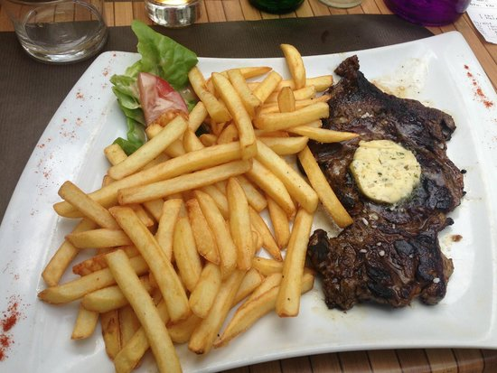

Entrecote and chips

This meaty dish will make you forget about everything bad about your life.
Ingredients
- About 250 grams of entrecote
- About 200 grams of chips
- 20 grams of salted butter
- A touch of garlic powder, parsley
- Salt, pepper and a tablespoon of oil
- Mayonnaise or ketchup for fries
Steps
- Preheat the oven to 225 C
- Take the steak to room temperature for about 20 minutes at least.
- Season it with a pinch of salt and some pepper for each side.
- Put the chips in the oven for about 10 to 15 minutes depending on thickness.
- Make a flavored butter by mixing the butter with the spices. Put it in the freezer.
- Add the oil to hot pan, and fry the steak for 2 minutes per side if the thickness is 2 cm. If it's 1cm, then 1 minute per side, and so on.
- Let the steak rest for 5 minutes.
- Salt the chips when they are ready.
- Plate everything, chips next to the entrecote and the flavored butter on top of the entrecote. Eat.